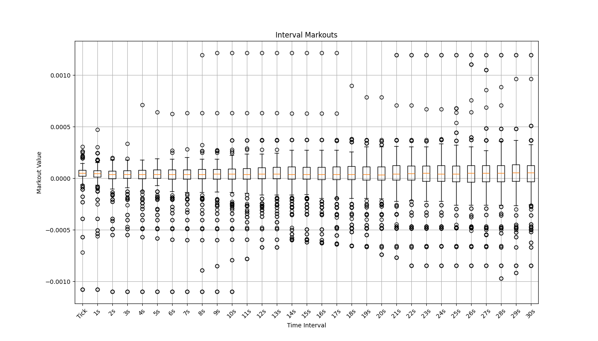
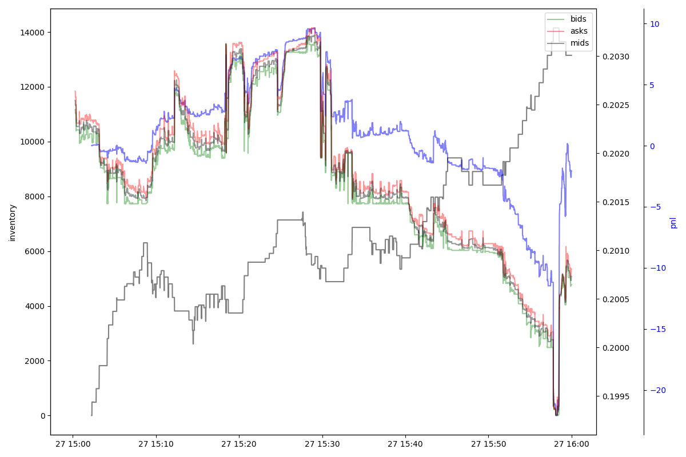
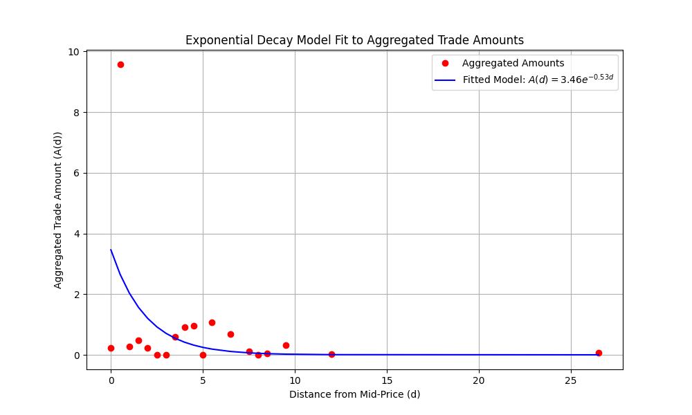

quantpylib.hft
quantpylib.hft is our core module designed for hft-trading purposes, including modelling, analysis and simulation of high-frequency data.
quantpylib.hft.alpha is our simulator, modeller and backtester. You may simulate fills, portfolio wealth and do statistical modelling, such as fair price analysis.
quantpylib.hft.lob is our internal limit-order book representation, and is designed to store orderbook states and buffers. There are utility functions to keep accurate representations of the internal state for both book snapshots and incremental updates. A host of other utility functions related to orderbook modelling can be found.
quantpylib.hft.trades is our internal trade buffer. There are utility functions to compute useful information and statistics from the data stored in the buffer.
quantpylib.hft.statistics is a statistics library for hft modelling - in addition it should work seamlessly with the data structures in the quantpylib.hft.lob.LOB and quantpylib.hft.trades.Trades object instances.
Examples
Backtest
We may want to test some order simulation and fills. To do that, we would need to use the
quantpylib.hft.alpha.Alpha object, which extends the quantpylib.hft.alpha.Simulator.
Looking at the documentation, the Alpha object takes in cash, maker fees, taker fees and arguments to Simulator,
which takes in some numpy orderbook and trades data.
Let's load some data (note that the ob and trades objects in Section Statistics example can be directly passed
into Simulator instances).
from quantpylib.utilities.general import load_pickle
(
ob_timestamps, #milliseconds
bids,
asks,
mids,
trades
) = load_pickle("hft_data") #from the /examples folder
print(ob_timestamps.shape, bids.shape, asks.shape, mids.shape) #(6101,) (6101, 20, 2) (6101, 20, 2) (6101,)
print(trades.shape) #(3242, 4)
ob_timestamps >> [1722092399738 1722092400349 ... 1722095998678 1722095999283]
bids[0] >> [[2.0245e-01 1.9000e+02]
[2.0244e-01 1.2500e+02]
[2.0243e-01 7.5000e+02]
[2.0242e-01 2.5800e+02]
...]
asks[0] >> [[2.0263e-01 2.3800e+02]
[2.0264e-01 2.4600e+02]
[2.0265e-01 3.2500e+02]
[2.0266e-01 8.4400e+02]
...]
mids >> [0.20254 0.202545 0.202545 ... 0.20073 0.20073 0.20073 ]
trades >>
[[ 1.72209242e+12 2.02640000e-01 6.80000000e+01 1.00000000e+00]
[ 1.72209242e+12 2.02450000e-01 2.13000000e+02 -1.00000000e+00]
[ 1.72209242e+12 2.02440000e-01 1.25000000e+02 -1.00000000e+00]
...
[ 1.72209600e+12 2.00810000e-01 1.07000000e+03 1.00000000e+00]
[ 1.72209600e+12 2.00810000e-01 8.57000000e+02 1.00000000e+00]
[ 1.72209600e+12 2.00810000e-01 1.15000000e+02 1.00000000e+00]]
Some imports:
import numpy as np
import matplotlib.pyplot as plt
from quantpylib.hft.alpha import EVENT_CLOCK, EVENT_LOB, EVENT_TRADE
from quantpylib.hft.alpha import Alpha
from quantpylib.hft.features import rolling_vol
There are not that many endpoints to implement. We can see in the docs that Simulator exposes compute_*_features, and Alpha exposes event_orders_update and event_orders_fill.
The compute methods are data pre-processing step where you can do heavy numerical/vectorized work on your data buffers to aid in your signal. The event_orders_update handles your live orders; here you can handle order creates, cancels and modifies. event_orders_fill is a notification for orders filled. All orders created have the format (price, size, dir, cloid). Cloid can be set to any value or specific value for your own needs. Taker orders are just aggressive prices, the actual filled price is matched against the order book liquidity. Maker orders are assumed filled when there is a crossing (strict inequality) trade event.
For demonstration, we will just use some orderbook features. In fact we are just going to use volatility and quote symmetrically around the mid price:
class Strat(Alpha):
def event_orders_fill(
self,cash,equity,position,ts,event_type,event_id,type_id,
trade_buffer,ob_timestamps,ob_bids,ob_asks,ob_mids,features,
running_event_ids,running_type_ids,
orders,filled_orders,is_maker,**kwargs
):
pass
def event_orders_update(
self,cash,equity,position,ts,event_type,event_id,type_id,
trade_buffer,ob_timestamps,ob_bids,ob_asks,ob_mids,features,
open_orders,running_event_ids,running_type_ids,**kwargs
):
pass
def compute_lob_features(self,lob_timestamps,lob_mids,lob_bids,lob_asks):
pass
def compute_trade_features(self,trade_buffer):
pass
#def other compute_*_
n = len(lob_timestamps). We are just going to use the rolling volatility function from quantpylib.hft.features.
def compute_lob_features(self,lob_timestamps,lob_mids,lob_bids,lob_asks):
return {
"vol" : rolling_vol(lob_mids,n=200),
}
event_orders_update, kwargs contain additional information w.r.t to the event type. You can have custom events, but by default, we have EVENT_CLOCK, EVENT_LOB and EVENT_TRADE. Since these events have different cardinality (number of orderbook data different from trades, for instance), the last/most-recent index
we are able to access is given in running_type_ids. To create quotes symmetrically about the mid-price on each orderbook tick and four standard deviations wide, we can do:
def event_orders_update(
self,cash,equity,position,ts,event_type,event_id,type_id,
trade_buffer,ob_timestamps,ob_bids,ob_asks,ob_mids,features,
open_orders,running_event_ids,running_type_ids,**kwargs
):
if event_type == EVENT_LOB:
mid = kwargs['mid']
sigma = features[EVENT_LOB]["vol"][type_id]
return np.array([
[mid - 4 * sigma, 100/mid, 1, self.cloid()],
[mid + 4 * sigma, 100/mid, -1, self.cloid()]
],dtype=np.float64)
mid - 4sigma, order value is 100, size is 100/mid, and direction is long 1. We submit both bid and ask orders. If the event is ignored, that is None is returned, then it is the same as returning open_orders:
def event_orders_update(
self,cash,equity,position,ts,event_type,event_id,type_id,
trade_buffer,ob_timestamps,ob_bids,ob_asks,ob_mids,features,
open_orders,running_event_ids,running_type_ids,**kwargs
):
if event_type == EVENT_LOB:
mid = kwargs['mid']
sigma = features[EVENT_LOB]["vol"][type_id]
return np.array([
[mid - 4 * sigma, 100/mid, 1, self.cloid()],
[mid + 4 * sigma, 100/mid, -1, self.cloid()]
],dtype=np.float64)
if event_type == EVENT_CLOCK:
return open_orders
[] to cancel all orders. There is no action to take on filled orders for this simple setup. It is simple to run
alpha = Strat(
cash=5000,
ob_timestamps=ob_timestamps,ob_bids=bids,ob_asks=asks,ob_mids=mids,
trade_buffer=trades,
taker_fees=0.00035, maker_fees=-0.00001,
)
df = alpha.run_simulation()
We can plot next-tick markouts and second interval markouts of fills against mid price:
as well as pnl, inventory overlayed on prices:
Of course, this was a highly simplistic market-making logic. Obviously the
position sizing should be a function of cash, equity and position and other portfolio states. We can also trade on clock-cycles - to do this,
say we want to refresh our orders every second rather than on a orderbook update. Since we want would be trading on EVENT_CLOCK, the type_id refers
to the index within the clock events. However, we can use running_type_ids and EVENT_LOB to get the recent bid-asks - the orders update function is updated:
def event_orders_update(
self,cash,equity,position,ts,event_type,event_id,type_id,
trade_buffer,ob_timestamps,ob_bids,ob_asks,ob_mids,features,
open_orders,running_event_ids,running_type_ids,**kwargs
):
if event_type == EVENT_CLOCK:
bids = ob_bids[running_type_ids[EVENT_LOB]]
asks = ob_asks[running_type_ids[EVENT_LOB]]
mid = (bids[0,0] + asks[0,0])/2
#or simply => ob_mids[running_type_ids[EVENT_LOB]]
sigma = features[EVENT_LOB]["vol"][running_type_ids[EVENT_LOB]]
return np.array([
[mid - 4 * sigma, 100/mid, 1, self.cloid()],
[mid + 4 * sigma, 100/mid, -1, self.cloid()]
],dtype=np.float64)
# if event_type == EVENT_LOB:
# mid = kwargs['mid']
# sigma = features[EVENT_LOB]["vol"][type_id]
# return np.array([
# [mid - 4 * sigma, 100/mid, 1, self.cloid()],
# [mid + 4 * sigma, 100/mid, -1, self.cloid()]
# ],dtype=np.float64)
alpha = Strat(
cash=5000,
ob_timestamps=timestamps,ob_bids=bids,ob_asks=asks,ob_mids=mids,
trade_buffer=trades,
taker_fees=0.00035, maker_fees=-0.00001,clock_interval=1,
)
clock_interval=0.25.
Limit-Order Book
You may want to use the orderbook with your own data stream. Here is an example of how you can do it (speudo-code)
from quantpylib.hft.lob import LOB
ob = LOB(depth=depth,buffer_size=buffer_size)
async def on_stream(msg):
ob.update(msg['ts'],msg['b'],msg['a'],is_snapshot=True / False)
A limit order book object is only interesting with data already in it. Although we can create a LOB object directly, for demonstration - we are going to obtain it from a market data stream. Fortunately, our quantpylib.gateway.executor library has a l2_book_mirror method that returns a live orderbook object.
We will get data from hyperliquid through the gateway object:
import asyncio
from quantpylib.gateway.master import Gateway
gateway = Gateway(config_keys={"hyperliquid":{}})
async def ob_handler(ob):
print(ob.get_mid(), ob.get_spread())
return
async def main():
await gateway.init_clients()
ob_model = await gateway.executor.l2_book_mirror(
ticker="SOL",
depth=20,
buffer_size=200,
as_dict=False,
on_update=ob_handler,
exc='hyperliquid'
)
await asyncio.sleep(60)
if __name__ == "__main__":
asyncio.run(main())
l2_book_mirror method in quantpylib.wrappers.hyperliquid wrapper, and as_dict=False specifices we want a quantpylib.hft.lob.LOB object.
We can now use the utility functions of the orderbook class. While we are sleeping, the ob_handler prints out...
182.04500000000002 0.010000000000019327
182.04500000000002 0.010000000000019327
182.04500000000002 0.010000000000019327
182.05 0.020000000000010232
182.075 0.010000000000019327
182.075 0.010000000000019327
182.075 0.010000000000019327
182.075 0.010000000000019327
LOB.update method here, since the mirror method takes care of the state of the orderbook on data stream. Let's take a look at some of the utility functions after sleeping:
print(ob_model.get_mid(),ob_model.get_vamp(notional=3000))
print(ob_model.get_vol(exp=True))
print(ob_model.buffer_len())
Trades
Like the LOB object, Trades is a trade buffer stream. Using the data streamed in, we may get useful information such as trade imbalance.
Filling in the trade buffer is extremely easy, let's get the hyperliquid BTC trade stream:
import asyncio
from quantpylib.hft.trades import Trades
from quantpylib.wrappers.hyperliquid import Hyperliquid
async def main():
ticker = "BTC"
hpl = Hyperliquid()
await hpl.init_client()
trades = Trades(buffer_size=1_000_000)
async def trade_handler(trade):
#trade is (time_ms, price, size, dir)
#>>> (1722177301662, 67749.0, 0.0003, -1)
trades.append(trade=trade)
await hpl.trades_subscribe(ticker=ticker,handler=trade_handler)
await asyncio.sleep(1000)
Statistics
This is our statistical library for hft modelling. It is designed to work seamlessly with the data structures from our internal state representations, such as the orderbook LOB and trades Trades, but will work just as well with external data.
For instance, we may be interested in computing orderbook liquidity - to do this we fit an exponential decay model for the hit and -lifted amounts against the distance to mid price. This figure is directly related to the Poisson intensity that is often taken as a model for trade arrivals.
Let's stream both the l2-book data and the trades occuring:
import asyncio
import numpy as np
import matplotlib.pyplot as plt
from quantpylib.hft.lob import LOB
from quantpylib.hft.trades import Trades
from quantpylib.hft.stats import intensity
from quantpylib.wrappers.hyperliquid import Hyperliquid
async def main():
ticker = "BTC"
hpl = Hyperliquid()
await hpl.init_client()
ob = await hpl.l2_book_mirror(
ticker=ticker,
depth=20,
buffer_size=1_000_000,
as_dict=False
)
trades = Trades(buffer_size=1_000_000)
async def trade_handler(trade):
trades.append(trade=trade)
await hpl.trades_subscribe(ticker=ticker,handler=trade_handler)
await asyncio.sleep(60 * 20)
#code goes here...
if __name__ == "__main__":
asyncio.run(main())
quantpylib.hft.stats.intensity, and make some plots:
print(ob.buffer_len()) #2051
print(trades.buffer_len()) #408
params = intensity(
lob_timestamps=ob.get_ts_buffer(),
lob_mids=ob.get_mids_buffer(),
trades=trades.get_buffer(),
)
alpha = params.get("alpha")
kappa = params.get("kappa")
levels = params.get("levels")
agg_amounts = params.get("amounts")
fitted_values = alpha * np.exp(-kappa * levels)
# Plot the actual and fitted
plt.figure(figsize=(10, 6))
plt.plot(levels, agg_amounts, 'o', label='Aggregated Amounts', color='red')
plt.plot(levels, fitted_values, '-', label=f'Fitted Model: $A(d) = {alpha:.2f} e^{{-{kappa:.2f} d}}$', color='blue')
plt.xlabel('Distance from Mid-Price (d)')
plt.ylabel('Aggregated Trade Amount (A(d))')
plt.title('Exponential Decay Model Fit to Aggregated Trade Amounts')
plt.legend()
plt.grid(True)
plt.show()

Values such as kappa are often used as measures of orderbook liquidity. Higher values of kappa indicate strong decay, hence greater trading near the mid-price. Lower values indicate weak decay - market order sizes often wipe out a few levels in the orderbook and have strong price impact. See Hummingbot implementation of computing trade intensity. In stoikov-avellaneda market making formula, kappa appears as term in optimal spread; see Hummingbot avellaneda_market_making.pyx:
self._optimal_spread = self.gamma * vol * time_left_fraction
self._optimal_spread += 2 * Decimal(1 + self.gamma / self._kappa).ln() / self.gamma